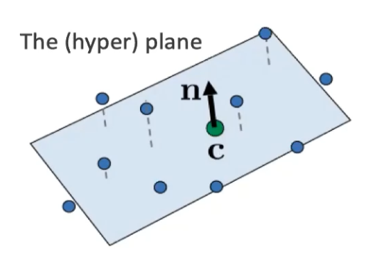
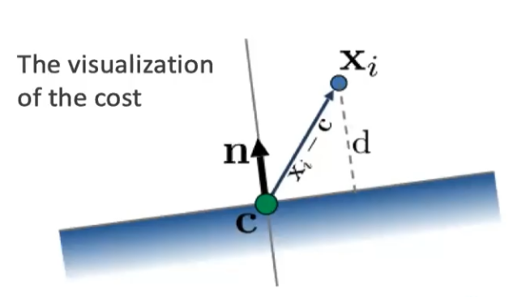
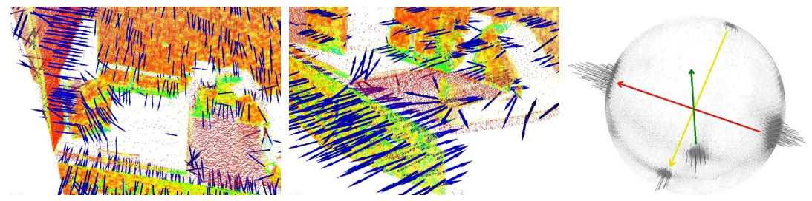
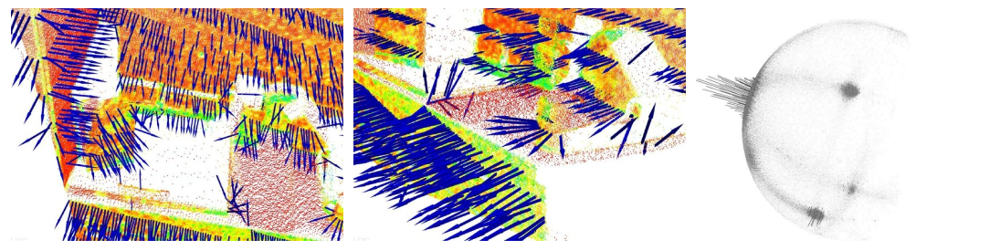
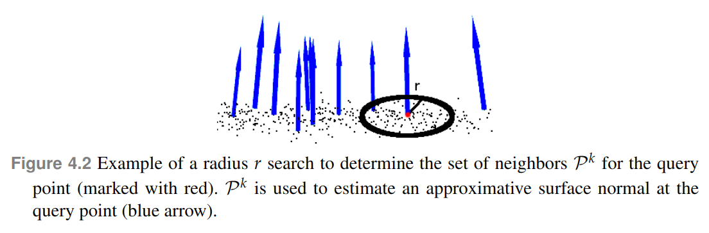
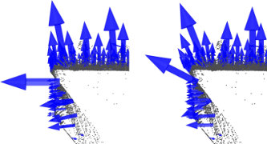
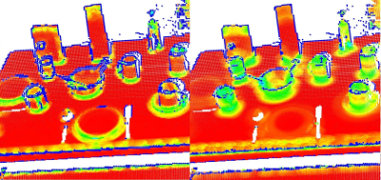
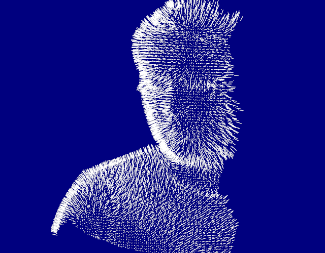
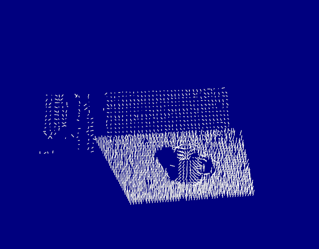

点云表面法线估算¶
估算点云表面法线 *¶
表面法线是几何表面的重要属性，在许多领域（例如计算机图形应用程序）中大量使用，以应用正确的光源以产生阴影和其他视觉效果。
给定一个几何表面，通常很难将表面某个点的法线方向推断为垂直于该点表面的向量。但是，由于我们获取的点云数据集是真实表面上的一组点样本，因此有两种可能性：
- 使用表面网格化技术从获取的点云数据集中获取基础表面，然后从网格中计算表面法线；
- 使用近似值直接从点云数据集中推断表面法线。
我们将使用后者，即给定点云数据集，直接计算云中每个点的表面法线。
理论基础¶
尽管有许多不同的法线估计方法，我们先了解其中最简单也是最常见的一个，确定表面一点法线的问题近似于估计表面的一个相切面法线的问题，因此转换过来以后就变成一个最小二乘法平面拟合估计问题。
参见官网介绍
法线计算¶
我们将平面表示为一个点 c 和一个法向量 \vec n，则从一个点p_{i} \in P^k到平面的距离可以定义为：x和n的值是通过最小二乘法以使 d_i = 0 得到的，则中心点：
假如有一堆点 p_{i} ，查找一个超平面，使通过点c的一个法向量 \vec n 满足：
周围点的向量(p_i - c)^T在法向量 \vec n 上的投影之和最小（两个向量的乘积即是一个向量在另一个向量上的投影）


c作为P^k的中心，法向量\vec n的值是通过分析点集合P^k协方差矩阵\mathcal{C} \in R^{3 \times 3}的特征值和特征向量得到的（PCA—主成分分析），对于指定区域的点集合P^k，其协方差矩阵定义如下：
\mathcal{C}是一个对称的半正定矩阵，k是点数目，\bar p是周围点的质心，\lambda_j是协方差矩阵的第j个特征值。\vec v_j是协方差矩阵的第j个特征向量。通过以下代码可以计算质心和协方差矩阵。
// 定义一小块表面区域的协方差矩阵
Eigen::Matrix3f covariance_matrix;
// 定义一小块表面区域的质心坐标
Eigen::Vector4f xyz_centroid;
// 计算质心坐标
pcl::compute3DCentroid(*cloud, xyz_centroid);
// 计算3x3的协方差矩阵
pcl::computeCovarianceMatrix(*cloud , xyz_centroid, covariance_matrix);
表面曲率Surface Curvature通过协方差矩阵的特征值进行估算得到：
这里\lambda_0 = min(\lambda_j)，即三个特征值中的最小值。
法线方向问题¶
没有直接的数学方法可以解决法线的朝向问题，如下边的左图和中图，该数据及来自厨房环境的一部分。很明显图中显示出的法线方向并非朝着一个方向。可以观察右图，对所有法线合并成的扩展高斯图（EGI），也称为法线球体（Normal Sphere），它描述了点云中所有法线的方向。由于数据是2.5维的，即数据只从单一视角获取，其法线也应该仅是一个半球体的扩展高斯图，由于我们没有定下法线的方向，所以这些法线遍布球体。

但是，如果我们有了视点V_p，则此问题就很好解决了。我们让所有法线\vec n选取其朝向视点的那个方向即可：

则可以观察到将所有法线重新定向之后的效果和其对应的扩展高斯图EGI。
选择合适的比例¶
如前所述，需要根据该点的周围点邻域支持，也称为k-neighborhood（k邻域）来估算该点的表面法线。 最近邻估计问题的细节提出了正确的比例因子的问题：给定采样点云数据集，如何选择正确的k（通过pcl::Feature::setKSearch给出）或r（通过pcl::Feature::setRadiusSearch 给出）值来确定点的最近邻居？

这个问题非常重要，并且构成了点特征表示的自动估计（即在没有用户给定阈值的情况下）的限制因素。为了更好地说明此问题，下图显示了选择较小的比例（即较小的r或k）与较大的比例（即较大的r或k）的效果。图的左侧部分描绘了一个合理选择的比例因子，其中估计的表面法线大致垂直于两个平面，并且在整个桌子上可见小的边缘。但是，如果比例因子太大（右侧部分），则相邻对象的集合会覆盖来自相邻表面的较大点，则估计的点要素表示会失真，在两个平面边缘处旋转的曲面法线会被涂抹边缘和压制的精细细节。


无需赘述太多，只需假设现在必须根据应用所需的详细程度来选择确定点的邻域的比例即可。简而言之，如果杯子的手柄和圆柱部分之间的边缘处的曲率很重要，则比例因子必须足够小以捕获这些细节，否则要大。
默认视点坐标为(0,0,0)，可以使用以下代码修改：
setViewPoint(float vpx, float vpy, float vpx);
计算表面法向量内部伪代码：
// 遍历每个点云P中的点p
for each point p in cloud P
// 得到p点的最近邻
1. get the nearest neighbors of p
// 计算p点的表面法线n
2. compute the surface normal n of p
// 检查n的方向是否指向视点，如果不是则进行反转
3. check if n is consistently oriented towards the viewpoint and flip otherwise
代码实现¶
normal_estimation.cpp
#include <pcl/visualization/cloud_viewer.h>
#include <iostream>
#include <pcl/io/io.h>
#include <pcl/io/pcd_io.h>
#include <pcl/features/normal_3d.h>
/**
* 评估法向量
*/
int
main() {
// load point cloud
pcl::PointCloud<pcl::PointXYZ>::Ptr cloud(new pcl::PointCloud<pcl::PointXYZ>);
pcl::io::loadPCDFile("./data/target.pcd", *cloud);
// estimate normals
pcl::PointCloud<pcl::Normal>::Ptr normals(new pcl::PointCloud<pcl::Normal>);
// Object for normal estimation.
pcl::NormalEstimation<pcl::PointXYZ, pcl::Normal> normalEstimation;
//normalEstimation.setIndices()
normalEstimation.setInputCloud(cloud);
// For every point, use all neighbors in a radius of 3cm.
normalEstimation.setRadiusSearch(0.03);
// A kd-tree is a data structure that makes searches efficient. More about it later.
// The normal estimation object will use it to find nearest neighbors.
pcl::search::KdTree<pcl::PointXYZ>::Ptr kdtree(new pcl::search::KdTree<pcl::PointXYZ>);
normalEstimation.setSearchMethod(kdtree);
// Calculate the normals.
normalEstimation.compute(*normals);
// visualize normals
pcl::visualization::PCLVisualizer viewer("PCL Viewer");
viewer.setBackgroundColor(0.0, 0.0, 0.5);
viewer.addPointCloud<pcl::PointXYZ>(cloud, "cloud");
// 参数int level=2 表示每n个点绘制一个法向量
// 参数float scale=0.01 表示法向量长度缩放为0.01倍
viewer.addPointCloudNormals<pcl::PointXYZ, pcl::Normal>(cloud, normals, 2, 0.01, "normals");
// viewer.addCoordinateSystem(1.0);
while (!viewer.wasStopped()) {
viewer.spinOnce();
}
return 0;
}
实现效果¶

积分图估算点云法线¶
此方法进行法线估计只适用于有序点云,对于无序点云就只能采用其他方法。
代码实现¶
integral_image_normal.cpp
#include <pcl/io/io.h>
#include <pcl/io/pcd_io.h>
#include <pcl/features/integral_image_normal.h>
#include <pcl/visualization/cloud_viewer.h>
int
main() {
// load point cloud
pcl::PointCloud<pcl::PointXYZ>::Ptr cloud(new pcl::PointCloud<pcl::PointXYZ>);
pcl::io::loadPCDFile("./data/table_scene_mug_stereo_textured.pcd", *cloud);
// estimate normals
pcl::PointCloud<pcl::Normal>::Ptr normals(new pcl::PointCloud<pcl::Normal>);
// 创建一个用于法线估计的对象并计算法线
pcl::IntegralImageNormalEstimation<pcl::PointXYZ, pcl::Normal> ne;
// 有以下可选的估算方式：
/**
enum NormalEstimationMethod
{
COVARIANCE_MATRIX,
AVERAGE_3D_GRADIENT,
AVERAGE_DEPTH_CHANGE
};
COVARIANCE_MATRIX模式创建9个积分图像，以根据其局部邻域的协方差矩阵为特定点计算法线。
AVERAGE_3D_GRADIENT模式创建6个积分图像以计算水平和垂直3D渐变的平滑版本，并使用这两个渐变之间的叉积计算法线。
AVERAGE_DEPTH_CHANGE模式仅创建单个积分图像，并根据平均深度变化计算法线。
*/
ne.setNormalEstimationMethod(ne.AVERAGE_3D_GRADIENT);
ne.setMaxDepthChangeFactor(0.02f);
ne.setNormalSmoothingSize(10.0f);
ne.setInputCloud(cloud);
ne.compute(*normals);
// visualize normals
pcl::visualization::PCLVisualizer viewer("PCL Viewer");
viewer.setBackgroundColor(0.0, 0.0, 0.5);
viewer.addPointCloudNormals<pcl::PointXYZ, pcl::Normal>(cloud, normals);
while (!viewer.wasStopped()) {
viewer.spinOnce();
}
return 0;
}
实现效果¶
